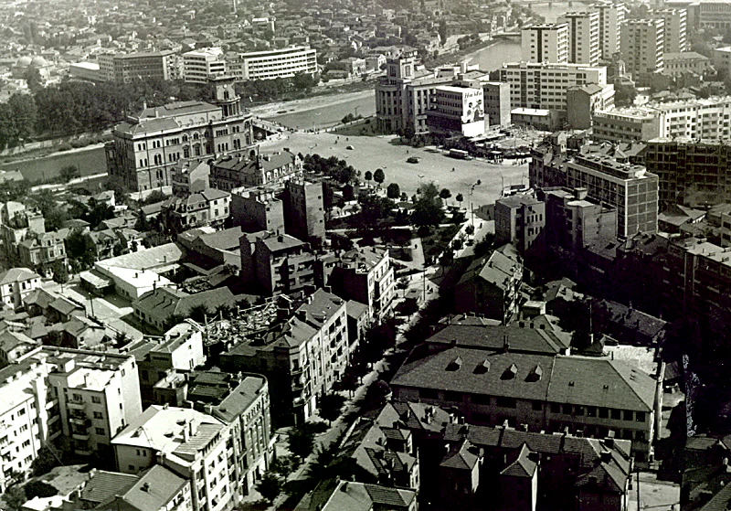
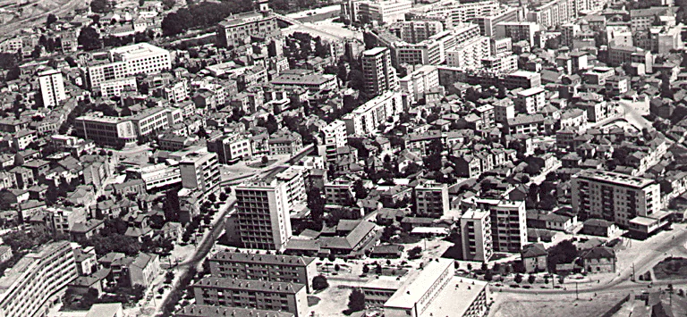
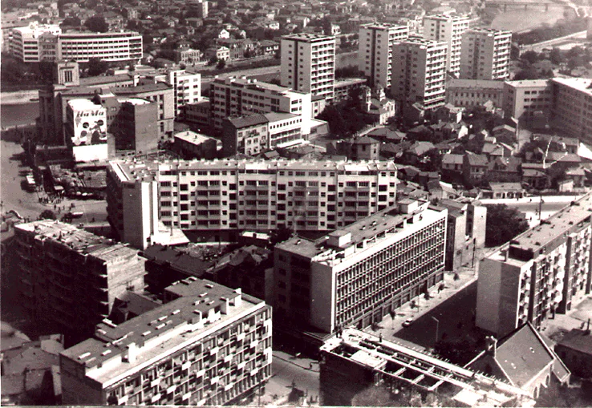

Πλατεία
- Σενάριο
- Ντιμίτριε Οσμανλί, Σιμόν Ντρακούλ
- Κάμερα
- Κίρο Μπιλμπιλόφσκι
- Έτος
- 1964
- Διάρκεια
- 00:06

Θέα της πόλης, με τον Πύργο του Ρολογιού δεξιά και το Τζαμί του Γαζή Ισά Μπέη αριστερά, με τη συνοικία «Σαάτ Κούλα». (Δεκαετία του 1940)

Η τσιμεντένια γέφυρα κοντά στο σημερινό ξενοδοχείο «Γκραντ». Στο βάθος φαίνεται το φρούριο των Σκοπίων - Καλέ. (Δεκαετία του 1950)

Πανόραμα των Σκοπίων. (Δεκαετία του 1950)

Πανόραμα των Σκοπίων. Στο πρώτο πλάνο η τσιμεντένια γέφυρα (κοντά στο σημερινό Γκραντ Οτέλ), και στο βάθος η Πέτρινη γέφυρα και τα κτίρια της Λέσχης Αξιωματικών και της Εθνικής Τράπεζας. Πάνω δεξιά φαίνεται το φρούριο των Σκοπίων - Καλέ. Η προκυμαία είναι διαμορφωμένη ως περίπατος και δρόμος για τα οχήματα, με πράσινο ανάμεσά τους. (Δεκαετία του 1950)

Θέα της τσιμεντένιας γέφυρας (κοντά στο σημερινό Γκραντ Οτέλ). Στο πρώτο πλάνο η συνοικία Πάικο. Στο βάθος το φρούριο των Σκοπίων - Καλέ, και δεξιά του το Τζαμί του Μουσταφά Πασά. (Δεκαετία του 1950)

Σκόπια, Δεκαετία του 1950, με νέες πολυκατοικίες. Στη μέση ο χώρος της σημερινής Λαχαναγοράς.

Πανόραμα της πόλης των Σκοπίων. Στο πρώτο πλάνο η πλατεία Ελευθερίας. Ο δρόμος προς τον Βαρδάρη είναι η «Βασίλ Γκλαβίνοφ». Στην πρώτη γωνία της πλατείας φαίνεται η είσοδος του δημοτικού σχολείου «Γκότσε Ντέλτσεφ». - Δεκαετία του 1950

Πλατεία «Σλόμποντα». Στο βάθος φαίνονται η Λέσχη Αξιωματικών και η Εθνική Τράπεζα. - Δεκαετία του 1950

Το κέντρο των Σκοπίων πριν από τον σεισμό - περίπου 1960.

Πανοραμική λήψη της κεντρικής περιοχής των Σκοπίων από αεροπλάνο. Η πλατεία με τη Λέσχη Αξιωματικών, την Εθνική Τράπεζα και το Οικονομικό και Εμπορικό Επιμελητήριο. Δεξιά το κεντρικό ταχυδρομείο, και κάτω αριστερά φαίνεται η στέγη του Εθνικού Θεάτρου. Η φωτογραφία είναι της δεκαετίας του 1950.

Πανοραμική φωτογραφία της κεντρικής περιοχής των Σκοπίων, - Δεκαετία του 1950

Αεροφωτογραφία της κεντρικής περιοχής της πόλης πριν από τον σεισμό - 1963. Ανάμεσα στους πύργους (πάνω δεξιά), όπου σήμερα βρίσκεται το εμπορικό κέντρο, φαίνεται η εκκλησία «Άγιοι Κωνσταντίνος και Ελένη».

Πανόραμα τμήματος της παλιάς αγοράς των Σκοπίων, Δεκαετία του 1950.

Θέα τμήματος του Μπιτ Παζάρ και της παλιάς αγοράς. Από πάνω φαίνεται το Τζαμί του Μουσταφά Πασά. (Δεκαετία του 1950)

Θέα του κέντρου των Σκοπίων. Η Πέτρινη γέφυρα χρησιμοποιείται ακόμη για την κυκλοφορία. Η φωτογραφία τραβήχτηκε λίγο μετά τον καταστροφικό σεισμό της 26ης Ιουλίου 1963.

Σκόπια 1968. Η θέση του σημερινού δημοτικού εμπορικού κέντρου.

Πανοραμική φωτογραφία του κέντρου της πόλης. Η πλατεία χρησιμοποιείται ακόμη ως χώρος στάθμευσης αυτοκινήτων.
(Δεκαετία του 1960)

Πανόραμα του κεντρικού τμήματος της πόλης με τη διευθέτηση του Βαρδάρη, φωτογραφημένο από το φρούριο των Σκοπίων - Καλέ. (Δεκαετία του 1970). Στο πρώτο πλάνο η Πέτρινη γέφυρα, το πολυκατάστημα Πελίστερ και άλλα κτίρια.

Θέα από το φρούριο των Σκοπίων - Καλέ προς το κέντρο της πόλης. Ο περίπατος στη δεξιά όχθη του Βαρδάρη είναι γεμάτος κόσμο. (Δεκαετία του 1970)

Θέα από το φρούριο των Σκοπίων - Καλέ προς το κέντρο της πόλης. (Δεκαετία του 1970)

Θέα της αριστερής όχθης του Βαρδάρη, ακριβώς δίπλα στην Πέτρινη γέφυρα. Στο κάτω μέρος της φωτογραφίας φαίνεται τμήμα της εκκλησίας του Αγίου Δημητρίου. (Δεκαετία του 1970)

Θέα της αριστερής όχθης του Βαρδάρη, ακριβώς δίπλα στην Πέτρινη γέφυρα. Στο κάτω μέρος της φωτογραφίας φαίνεται τμήμα της εκκλησίας του Αγίου Δημητρίου. (Δεκαετία του 1980)

Πανόραμα των Σκοπίων. Στο πρώτο πλάνο το μικρό πάρκο «Γυναίκα αγωνίστρια». Κάτω αριστερά φαίνεται τμήμα του κτιρίου του Δημοτικού νοσοκομείου και τμήμα του κτιρίου του Κοινοβουλίου. - Δεκαετία του 1980.

Το πάρκο «Γυναίκα αγωνίστρια» με το Δημοτικό Εμπορικό Κέντρο, με πολυκατοικίες και δημόσια κτίρια της πόλης των Σκοπίων. - Δεκαετία του 1980.

Θέα της λεωφόρου και της γέφυρας «Γκότσε Ντέλτσεφ» με την ανισόπεδη διάβαση στο πρώτο πλάνο. Στο βάθος το Κέντρο Τηλεπικοινωνιών και τμήμα του οικιστικού συγκροτήματος «Γκράντσκι ζιντ». (Δεκαετία του 1980)

Θέα της κεντρικής περιοχής της πόλης. Στο πρώτο πλάνο τμήμα των τραπεζών, η γέφυρα «Ρεβολούτσιγια» και το θέατρο. Στο βάθος φαίνονται η τσιμεντένια γέφυρα, η Πέτρινη γέφυρα και το Κέντρο Τηλεπικοινωνιών - Δεκαετία του 1980.

Θέα της κεντρικής περιοχής της πόλης από την ταράτσα της σημερινής Υπηρεσίας Οικονομικών. Στο βάθος φαίνεται η Πέτρινη γέφυρα. Στη δεξιά πλευρά της καρτ-ποστάλ φαίνεται το σημερινό θέατρο, και πάνω από αυτό διακρίνεται το φρούριο των Σκοπίων - Καλέ - Δεκαετία του 1980.

Σκόπια, τέλη της δεκαετίας του 1970. Η γέφυρα κοντά στο σημερινό ξενοδοχείο «Γκραντ». Αριστερά υψώνεται το κτίριο της Μακεδονικής Ραδιοτηλεόρασης, και δεξιά το κτίριο της σημερινής Υπηρεσίας Πληρωμών.

Πανόραμα των Σκοπίων από την πλαγιά του όρους Βόντνο. Στο πρώτο πλάνο το ξενοδοχείο «Πανόραμα». (Δεκαετία του 1980)

Πανόραμα των Σκοπίων τη νύχτα, από τις πλαγιές του όρους Βόντνο. (Δεκαετία του 1980)

 Υδραγωγείο4 καρτ-ποστάλ
Υδραγωγείο4 καρτ-ποστάλ Καλέ30 καρτ-ποστάλ
Καλέ30 καρτ-ποστάλ Γέφυρες60 καρτ-ποστάλ
Γέφυρες60 καρτ-ποστάλ Προκυμαία58 καρτ-ποστάλ
Προκυμαία58 καρτ-ποστάλ Πλατεία46 καρτ-ποστάλ
Πλατεία46 καρτ-ποστάλ Κτίρια66 καρτ-ποστάλ
Κτίρια66 καρτ-ποστάλ Χριστιανικοί ναοί19 καρτ-ποστάλ
Χριστιανικοί ναοί19 καρτ-ποστάλ Μουσουλμανικά κτίρια33 καρτ-ποστάλ
Μουσουλμανικά κτίρια33 καρτ-ποστάλ Λέσχη Αξιωματικών29 καρτ-ποστάλ
Λέσχη Αξιωματικών29 καρτ-ποστάλ Θέατρο28 καρτ-ποστάλ
Θέατρο28 καρτ-ποστάλ Σιδηροδρομικός σταθμός13 καρτ-ποστάλ
Σιδηροδρομικός σταθμός13 καρτ-ποστάλ Σχολεία36 καρτ-ποστάλ
Σχολεία36 καρτ-ποστάλ Πάρκα12 καρτ-ποστάλ
Πάρκα12 καρτ-ποστάλ Αγορές18 καρτ-ποστάλ
Αγορές18 καρτ-ποστάλ Δρόμοι38 καρτ-ποστάλ
Δρόμοι38 καρτ-ποστάλ Πανόραμα I60 καρτ-ποστάλ
Πανόραμα I60 καρτ-ποστάλ Πανόραμα II30 καρτ-ποστάλ
Πανόραμα II30 καρτ-ποστάλ Κολάζ55 καρτ-ποστάλ
Κολάζ55 καρτ-ποστάλ Πλημμύρες9 καρτ-ποστάλ
Πλημμύρες9 καρτ-ποστάλ Σεισμός27 καρτ-ποστάλ
Σεισμός27 καρτ-ποστάλ Σκόπια 200026 καρτ-ποστάλ
Σκόπια 200026 καρτ-ποστάλ